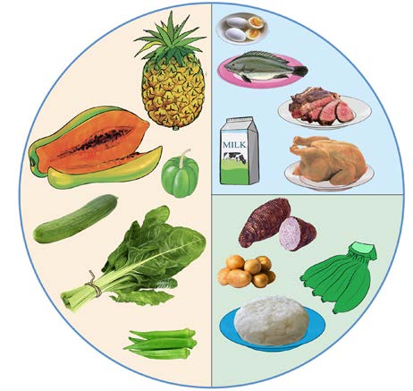
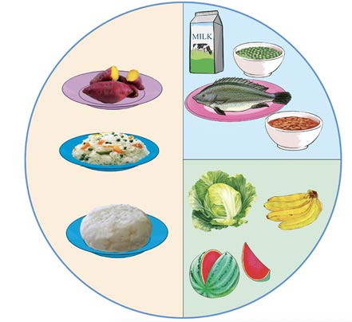

Manual workers
Manual workers include porters, cart pushers, mechanics and construction workers. Manual workers need a large amount of energy-giving foods. These foods provide enough energy for heavy tasks. They should also drink plenty of water to aid digestion and replace water lost through sweat. Figure 9 shows a balanced diet for manual worker.
